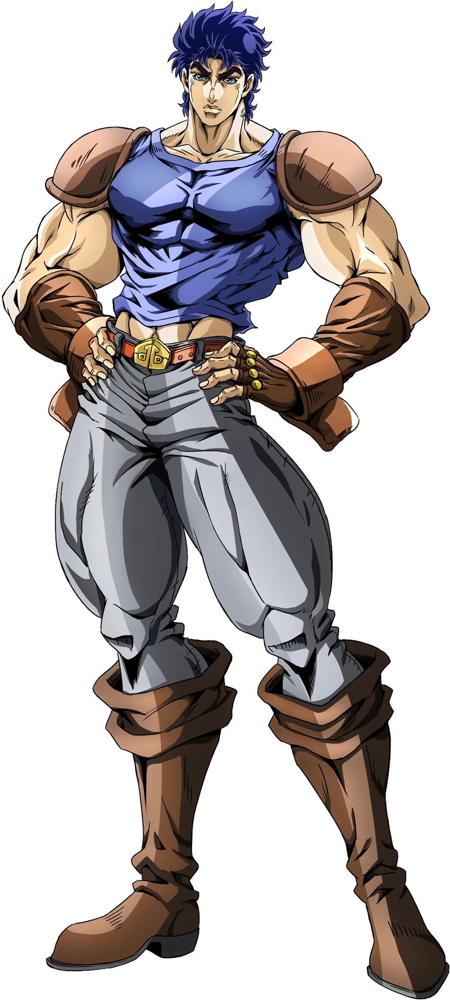
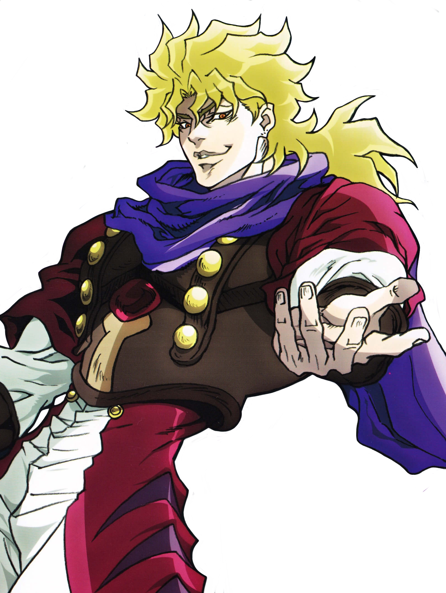
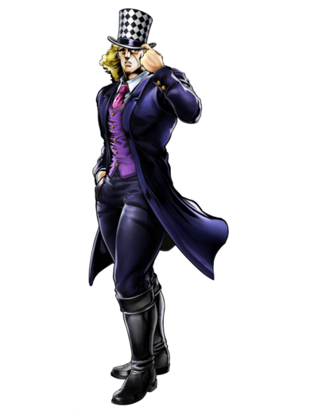
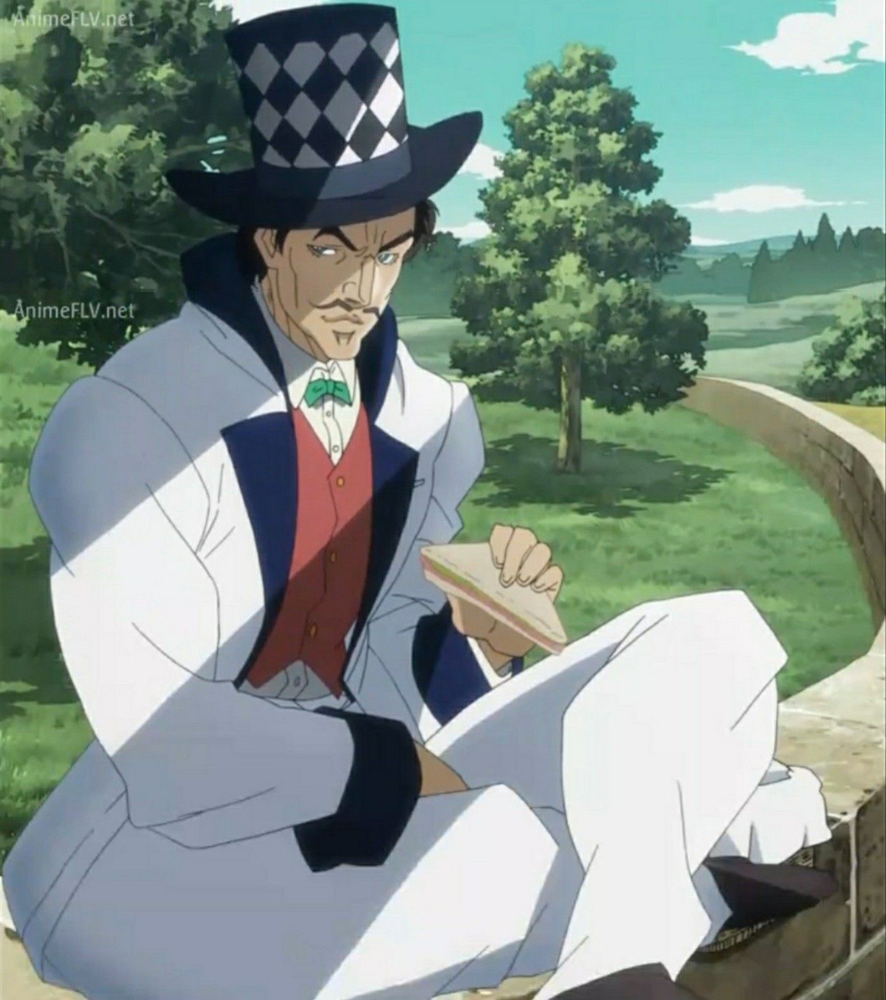

Jonathan Joestar é o primeiro protagonista da série JoJo's Bizarre Adventure. Ele nasceu na Inglaterra no século XIX e é filho de um homem rico chamado George Joestar. Desde pequeno, Jonathan foi educado para ser um verdadeiro cavalheiro, valorizando a honestidade, a coragem e o respeito pelas outras pessoas. A vida de Jonathan muda quando um garoto chamado Dio Brando é adotado por sua família. No começo, Jonathan tenta ser amigo dele, mas Dio secretamente sente inveja e ódio pela família Joestar e passa a atormentar Jonathan durante anos. Com o tempo, Jonathan descobre que Dio está envolvido com uma misteriosa máscara de pedra que possui poderes sobrenaturais. Quando Dio usa a máscara, ele se transforma em um poderoso vampiro. Para proteger sua família e impedir que Dio domine o mundo, Jonathan decide enfrentá-lo. Durante essa jornada, Jonathan aprende a usar uma técnica especial chamada Hamon, uma energia baseada na respiração que pode ser usada para combater criaturas sobrenaturais. Com a ajuda de aliados, ele enfrenta Dio em uma grande batalha para salvar a humanidade. Jonathan Joestar é lembrado como um herói nobre, corajoso e determinado, sendo o primeiro membro da família Joestar a lutar contra as forças do mal que ameaçam o mundo.

Dio Brando é o principal vilão da primeira parte de JoJo's Bizarre Adventure, chamada Phantom Blood. Ele nasce em uma família pobre e, após a morte de seu pai, é adotado pela família Joestar, passando a viver com Jonathan Joestar. Ambicioso e manipulador, Dio tenta destruir Jonathan para tomar a fortuna da família. Ao descobrir uma misteriosa máscara de pedra, ele a utiliza e se transforma em um poderoso vampiro. Com seus novos poderes, Dio passa a buscar mais poder, entrando em um grande confronto contra Jonathan.

Robert E. O. Speedwagon era um líder de gangue nas ruas de Londres. No início ele tenta atacar Jonathan Joestar, mas ao perceber a bondade e a coragem de Jonathan, decide se tornar seu aliado. A partir desse momento, Speedwagon passa a ajudar Jonathan em sua jornada contra Dio Brando. Mesmo não tendo poderes especiais, ele demonstra grande lealdade e coragem, tornando-se um dos amigos mais confiáveis de Jonathan.

Will Anthonio Zeppeli é um mestre da técnica Hamon, uma energia especial baseada na respiração usada para combater criaturas sobrenaturais. Após estudar a misteriosa máscara de pedra, ele decide dedicar sua vida a impedir que esse poder caia em mãos erradas. Durante sua jornada, Zeppeli encontra Jonathan Joestar e passa a treiná-lo para usar o Hamon. Ele se torna um importante mentor e aliado na luta contra Dio Brando e seus seguidores.
